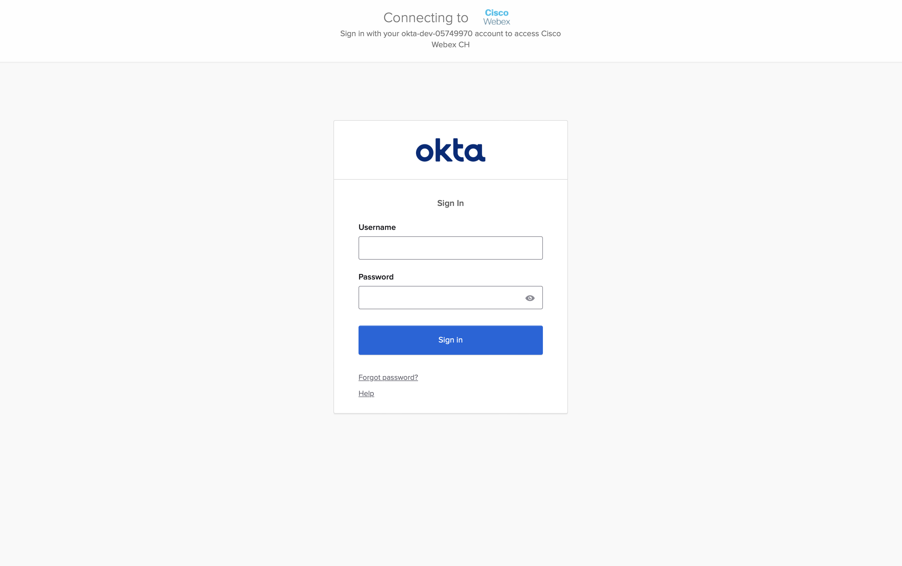
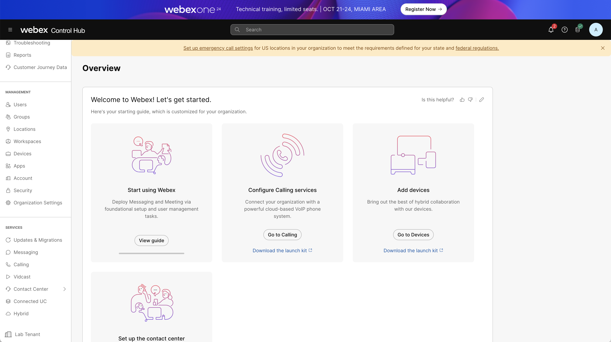
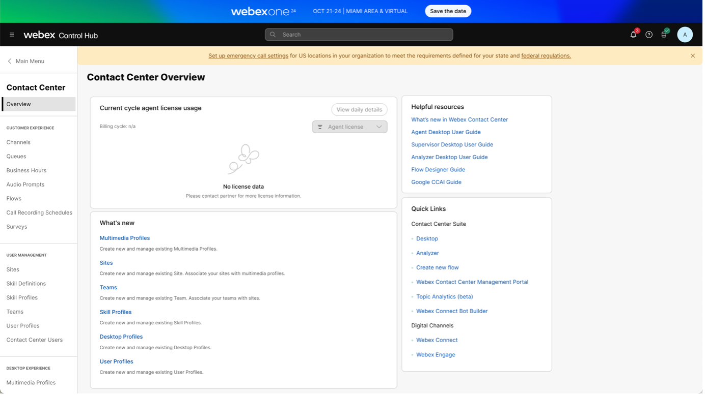

Please submit the form below with your Attendee or pod ID. All configuration entries in the lab guide will be renamed to include your pod ID.
Lab 9: Topic Analytics
Lab Objective
The objective of this lab is to gain a comprehensive understanding of Topic Analytics in Webex Contact Center to help identify potential candidates for automation, and apply the insights gained to enable subsequent AI-powered automation processes. This involves exploring various Topics identified by the AI model, analyzing individual conversations to identify areas of Automation. In this lab you are tasked to identify the top two opportunities for automation and capture the essential information needed to create the automation workflow by reviewing the customer conversations.
Pre-requisites
-
You have received the access credentials with a contact center administrator access.
-
Your Attendee ID will be used as the login in all the web pages, in the format:
wxcclabs+admin_ID***@gmail.com
| User Role | User Login Credentials |
|---|---|
| Administrator | wxcclabs+admin_ID |
Quick Links
- Control Hub: https://admin.webex.com/
- Topic Analytics: https://webexcc-pcap.produs1.ciscoccservice.com
Step 1: Access the Topic Analytics Portal
- Login to the Webex Control Hub using the admin credentials provided. ( Launch https://admin.webex.com/ )
{kind=link}
-
Login using the same admin credentials if you are redirected to Okta login

-
Scoll down the the left navigation panel and click on Contact Center under Services

-
Launch Topic Analytics Portal by clicking on Topic Analytics (Beta) under the Quick Links. Enter the admin email address to sign-in. Once you are signed-in accept the Oauth2 Notification.

-
Once logged in, click on the Topic Analytics from the left side navigation panel.
{kind=link}
{kind=link}
{kind=link}
{kind=link}
- Note creation of Topic collection can take up to 24 hours hence a Topic collection
Cisco_Live_May_Collectionis already pre-created for you.
{kind=link}
Step 2: Review the Topic Collection
- Click on the
Cisco_Live_May_Collectionto review the Topic collection.
- Under the Overview Tab, Notice the filter criteria used to create this collection.
{kind=link}
- Click on the Topics Tab to view all the topics identified by AI for this filter criteria.

- Additionally, you can click on the Expand button (>) to view all the call drivers associated with the Topic.

- Click on the Export button on the top right to download the result in the excel sheet.
{kind=link}
Step 3: Analyzing Conversations for a Given Topic
- Click on a Topic to view all the calls related to that Topic.
{kind=link}
- Click on individual call record to view more details such as the call recording, transcript and the Contact Details.
{kind=link}

Step 4: Prepare for Virtual Agent Automation
- Review the rank and the transcript to identify the top use case for automation.
{kind=link}
Analyze few transcripts for the top topic
Cancel Appointment Now. Based on the conversations, Identify the following information needed for automating calls for Cancelling an Appointment :
- Welcome Message
- Contact Reason/Intent
- Information needed to be Collected from the caller
- Action to be Performed
- Parting Phrase
{kind=link}
Confirm if you captured similar responses for Cancelling an appointment. We will be using this information to create Automation workflows in the subsequent labs :
- Welcome Message: Thank you for calling Cumulus Healthcare. How can I assist you today?
- Contact Reason/Intent: Cancelling an appointment
- Information needed to be Collected from the caller: Phone number and Insurance Number
- Action to be Performed: Lookup the appointment, confirm and cancel
- Parting Phrase: Have a great day.
Congratulations! You just completed the lab!
Feel free to reach out to the proctors for any questions or clarifications.